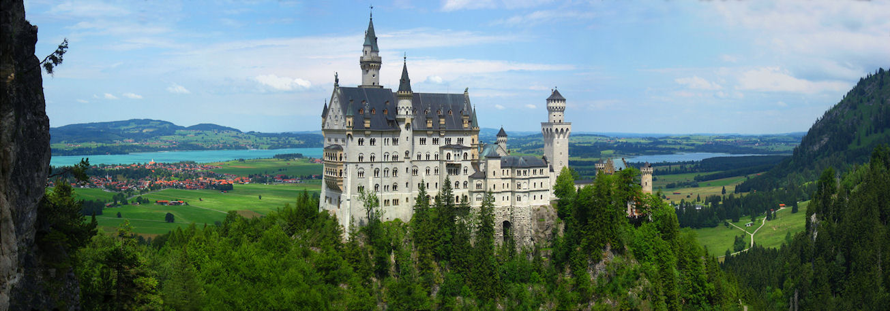

Europa

A Europa é o segundo menor continente em superfície do mundo, cobrindo cerca de 10 180 000 km² ou 2% da superfície da Terra e cerca de 6,8% da área acima do nível do mar. Dos cerca de 50 países da Europa, a Rússia é o maior tanto em área quanto em população (sendo que a Rússia se estende por dois continentes, a Europa e a Ásia) e o Vaticano é o menor. A Europa é o quarto continente mais populoso do mundo, após a Ásia, a África e a(s) América(s), com 740 milhões de habitantes em 2015, cerca de 11% da população mundial naquele ano.
A Europa, nomeadamente a Grécia Antiga, é considerada o berço da cultura ocidental. Tendo desempenhado um papel preponderante na cena mundial a partir do século XVI, especialmente após o início do colonialismo. Entre os séculos XVI e XX, as nações europeias controlaram em vários momentos as Américas, a maior parte da África, a Oceânia e grande parte da Ásia. Ambas as guerras mundiais foram em grande parte centradas na Europa, sendo considerado como o principal fator para um declínio do domínio da Europa Ocidental na política e economia mundial a partir de meados do século XX.
De acordo com os pontos de vista espacial e económico, podemos dividir o continente em: Europa Ocidental, Europa Setentrional, Europa Centro-Oriental e Europa Meridional. Como um continente, a economia da Europa é atualmente a maior do planeta e é a região mais rica como medido por ativos sob gestão, com mais de 32,7 trilhões de dólares em relação ao 27,1 trilhões de dólares da América do Norte. Tal como acontece com outros continentes, a Europa tem uma grande variação da riqueza entre os seus países. Os países mais ricos tendem a estar no Ocidente, enquanto algumas das economias do Leste ainda estão emergindo do colapso da União Soviética e da Iugoslávia.
PRINCIPAIS PAÍSES
- Alemanha
- Reino Unido
- França
- Itália
- Espanha
Alemanha

é um país localizado na Europa Ocidental. O território da Alemanha abrange 357 021 quilômetros quadrados e é influenciado por um clima temperado sazonal. Com 82,8 milhões de habitantes em 31 de dezembro de 2015, o país tem a maior população da União Europeia e é também o lar da terceira maior população de migrantes internacionais em todo o mundo.
A Alemanha é a maior economia da Europa, a quarta maior quando é considerado o PIB nominal e a quinta maior quando é considerada a Paridade do Poder de Compra. O crescimento de 2007 foi de 2,4%, a exportação de bens produzidos na Alemanha é um dos principais fatores da riqueza alemã. A Alemanha é maior exportador mundial com 1,13 trilhões U$ exportado em 2006 e gerou um superávit comercial de 165 bilhões €. O setor de serviços contribui com 70% do PIB, a indústria 29,1% e a agricultura 0,9%.
A Alemanha possui uma grande diversidade natural e cultural, apresenta-se como um dos mais populares destinos turísticos do mundo. De castelos, vilas idílicas, vales alpinos, praias e lagos intocados para o eterno festival urbano de cidades, a Alemanha é uma combinação singular de encanto, muito cosmopolita e com um estilo de vida único. A Alemanha é um país situado na Europa Ocidental com uma paisagem de florestas, rios, cordilheiras e praias do Mar do Norte. A nação tem mais de 2 milênios de história. Berlim, a capital, abriga cenários artísticos e de vida noturna, o Portão de Brandemburgo e muitos locais relacionados à Segunda Guerra Mundial. Munique é conhecida pela Oktoberfest e pelos beer halls, entre eles o Hofbräuhaus, do século XVI. Frankfurt, com seus arranha-céus, abriga o Banco Central Europeu.
Reino Unido
é um Estado soberano insular localizado em frente à costa noroeste do continente europeu. A área total do Reino Unido é de aproximadamente 245 000 quilômetros quadrados compreendendo a maior parte das Ilhas Britânicas, incluindo a ilha da Grã-Bretanha, o nordeste da ilha da Irlanda (Irlanda do norte) e outras pequenas ilhas. O Reino Unido é uma união política de quatro "países constituintes": Escócia, Inglaterra, Irlanda do Norte e País de Gales.
O Reino Unido tem uma economia de mercado parcialmente regulada. Ele é hoje a sétima maior economia do mundo e a terceira maior da Europa, depois da Alemanha e da França, tendo caído atrás da França em 2008, pela primeira vez em mais de uma década. Foi o primeiro país industrializado do mundo e a principal potência mundial durante o século XIX e o começo do século XX, mas o custo econômico de duas guerras mundiais e o declínio de seu império na segunda metade do século XX reduziu o seu papel de líder nos temas mundiais.
O turismo é muito importante para a economia britânica e, com mais de 27 milhões de turistas em 2004, o país é classificado como o sexto maior destino turístico do mundo e Londres recebe o maior número de visitantes internacionais do que qualquer outra cidade do mundo. A Inglaterra, local de nascimento de Shakespeare e dos Beatles, abriga a capital, Londres, um centro financeiro e cultural globalmente influente. Também na Inglaterra, ficam o neolítico Stonehenge, as termas romanas de Bath e as centenárias universidades de Oxford e Cambridge.
França

é um país, ou, mais especificamente, um Estado unitário localizado na Europa Ocidental, com várias ilhas e territórios ultramarinos noutros continentes. A França metropolitana abrange 547 030 quilômetros quadrados e tem a maior área territorial entre os membros da União Europeia. A França possui uma grande variedade de paisagens, desde as planícies costeiras no norte e oeste, as cordilheiras dos Alpes no sudeste, o Maciço Central da região centro-sul até aos Pirenéus no sudoeste.
Um membro G8, o país é classificado como a quinta maior economia do mundo. A França tem uma economia mista que combina a iniciativa privada extensa (cerca de 2,5 milhões de empresas registradas) com substanciais (embora em declínio) empresas estatais e intervenção do governo. O governo mantém considerável influência sobre segmentos-chave dos setores de infraestrutura, com participação majoritária em estradas de ferro, eletricidade, aviões, telecomunicações e usinas nucleares.

Com 81,9 milhões de turistas estrangeiros em 2007, a França é classificada como o maior destino turístico do mundo, à frente da Espanha (58,5 milhões em 2006) e Estados Unidos (51,1 milhões em 2006). Este valor de 81,9 milhões de pessoas exclui aquelas que ficam menos de 24 horas na França, como europeus do norte cruzando a França a caminho de Espanha ou da Itália durante o verão. A França, na Europa Ocidental, tem cidades medievais, aldeias alpinas e praias mediterrâneas. Paris, sua capital, é famosa pelas casas de alta costura, museus de arte clássica, como o Louvre, e monumentos como a Torre Eiffel. O país também é conhecido pelos vinhos e pela cozinha sofisticada. Antigos desenhos da caverna de Lascaux, o Teatro Romano de Lyon e o amplo Palácio de Versalhes atestam a sua rica história.


Itália

é uma república parlamentar unitária localizada no centro-sul da Europa. A área total do país é de 301 230 km², dos quais 294 020 km² são terra e 7 210 km² água. Incluindo as ilhas, a Itália tem um litoral e uma fronteira de 7 600km nos mares Adriático, Jônico e Tirreno (740 km) e as fronteiras comuns com a França (488 km), Áustria (430 km), Eslovênia (232 km) e Suíça; San Marino (39 km) e Cidade do Vaticano (3,2 km), ambos enclaves, também entram como fronteiras.
A Itália tem uma economia de mercado caracterizada por um elevado PIB per capita e taxas de desemprego baixas. Por paridade do poder de compra (PPC), o país possui o décimo maior PIB do mundo e o quinto maior da Europa. pós a Segunda Guerra Mundial, a Itália foi rapidamente transformada de uma economia baseada na agricultura para um dos países mais industrializados do mundo e um país participativo em comércio mundial e exportações.
O turismo também é muito importante para a economia italiana: com mais de 37 milhões de turistas por ano em 2004, a Itália é classificada como o quinto principal destino turístico do mundo. A Itália, país europeu com uma longa costa mediterrânea, deixou uma marca poderosa na culinária e na cultura ocidentais. A capital, Roma, é sede do Vaticano e abriga obras de arte monumentais e ruínas antigas. Outra cidade importante é Florença, com obras-primas do Renascimento, como o "Davi", de Michelangelo, e o Domo de Brunelleschi. Destacam-se também Veneza, a cidade dos canais, e Milão, capital da moda italiana.